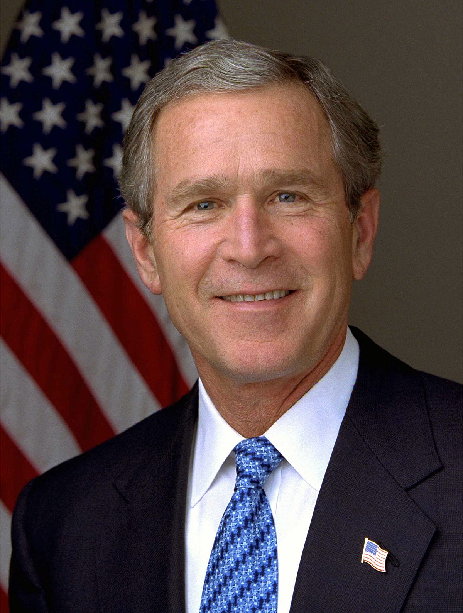
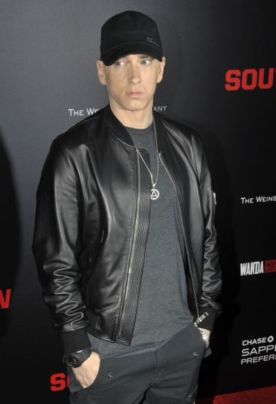

Un discours politique engagée
 

Le titre "Mosh" de l'album ENCORE (premier album ou Eminem opte pour un discours politique engagée) d’Eminem sorti en 2004 est un titre engagé ou Eminem critique le président Georges W. Bush pour sa décision d'engager une guerre en Irak et de maintenir l'occupation en l'Irak. DDans musique est sortie avant l'élection présidentielle américaine dn 2004 afin de changer les mentalités sur certains dirigeants.
Dans ce titre Eminem évoque plusieurs aspects négatif à propos des dirigeants American notamment Georges W. Bush, comme l'endoctrine des le plus jeune age à obéir au dirigents American quoi qu'il arrive avec le debut de la musique ou on entend dans cette extrait ci-dessou des enfant réciter le serment d'allégeance :
« I pledge allegiance to the flag Of the United States of America And to the republic for which it stands People! One nation, under God, indivisible It feels so good to be back! With liberty and justice for all »
Le rappeur American mentionne aussi le fait que le président Georges W. Bush décide d'engager une guerre contre l’Irak alors que beaucoup d'Américains étaient contre la guerre en Irak. A partir de ce constat Eminem demande au président d'aller lui meme livré cette guerre au lieu d'envoyer le peuple American au front avec cette extrait :
« Strap him with AK-47, let him go fight his own war »
Nous pouvons aussi prendre cet extrait ci-dessous ou il demande de ne plus versé du sang pour du pétrole et de se préoccuper des problèmes sur le sol Américain :
« No more blood for oil, we got our own battles to fight on our soil »
Enfin nous pouvons aussi parler du fait que dans la musique Eminem appelle plusieurs fois le peuple Américain à aller voter afin d'arrêter cette folie
« And assemble our own army »
« For the present, and mosh for the future of our next generation »
« To speak and be heard »
RABIAI Mustapha
Dans ce freestyle le rappeur Eminem critique la mentalité raciste et irresponsable du président Américain Donald Trump ainsi que ces décisions dont nous allons voir ci-dessous.
Premierment Eminem demande qu'on respecte le président Obama et compare le président Donald Trump à un kamikaze :
« But we better give Obama props'Cause what we got in office now's a kamikaze »
Eminem nous prévient que le président Donald Trump peut probablement la cause d'un holocauste nucléaire :
« That'll probably cause a nuclear holocaust »
Au cours de son freestyle le rappeur arrive à insulter ces fans qui voudrait défendre le président Donald Trump :
« any fan of mine who's a supporter of his I'm drawing in the sand a line, you're either for or against And if you can't decide who you like more and you're split On you should stand beside, I'll do it for you with this: Fuck you! »
Eminem dénonce aussi le fait que le président Donald Trump décide de construire un mur et de vouloir expulser les migrant mexicain et autres avec cet extrait :
« He's gonna get rid of all immigrants! He's gonna build that thing up taller than this! Well, if he does build it, I hope it's rock solid with bricks »
RABIAI Mustapha